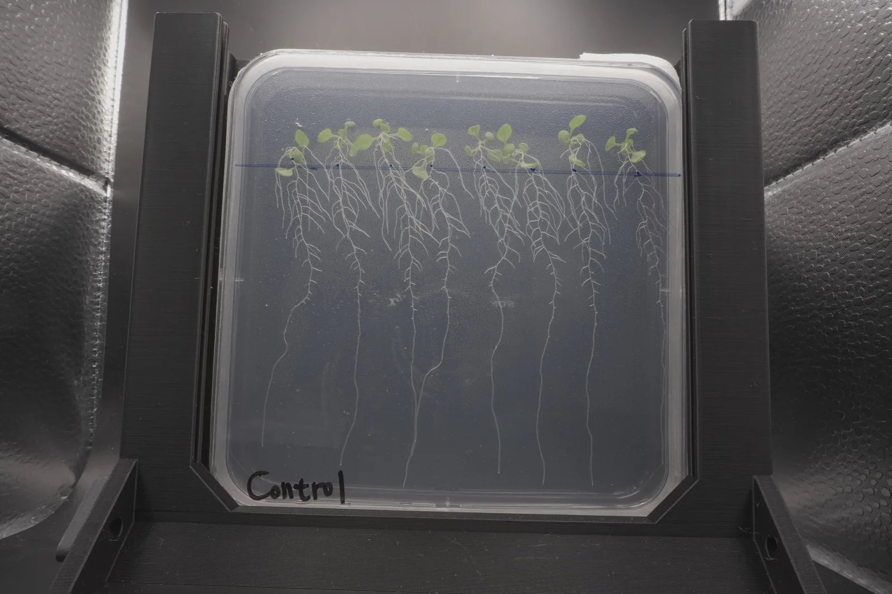
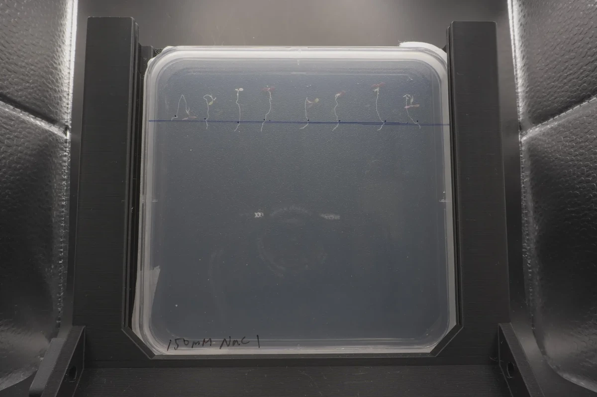

Measurement map
ReLeaf is a chain. A salt or heat stress reaches a plant, the plant releases the precursor of a stress hormone, a Bacillus subtilis culture inside a hollow fibre bioreactor secretes a protectant, the protectant crosses the membrane into a harvest stream, and the stream goes back to the plant. Each link is a different physical quantity, so each one needs its own instrument, its own unit and its own blank.
Three questions fall out of that chain, and the thirteen measurements on this page are grouped by which one they answer. Does the plant respond to a dose we control, and can we read the response? That is the plant group, and it gives the assay a working range before any protectant is tested. Does the strain actually make and export the protein? That is the protectant group. Does the reactor hold the organism in while letting the protein out, at a flow and a pressure we can name? That is the bioreactor group, and it is also the containment argument.
The relationship between them is a gate. A plant result means nothing without the protectant result, because a spray that contains no protein is a spray of medium. The 24 August Western blot is the clearest case on this wiki: it reads negative on the culture that had already been applied to plants, so the plant runs from that week measure a treatment that was not there. The order in which evidence arrives decides what a downstream number is allowed to claim, and that is why this page reports the protein measurements alongside the plant ones.
Nothing here restates a result that belongs to another page. The plant screen and its full run history are on Plants, the cloning and blot record on Engineering, and the photometer build on Hardware. What this page adds is the method, the unit, the control, and the state.
State of each measurement
Three states are used throughout. Run means the measurement was performed and its numbers sit in a file we can name. Partly run means it produced data but something about it is unsettled, and the block says what. Design only means the instrument or the assay exists as a written procedure and nothing else. No design-only measurement is given a results paragraph on this page.
| Measurement | State | Anchored to | What it is entitled to say |
|---|---|---|---|
| Agar plate stress test | Run | Untreated plate on the same pour, same day | Injury rises monotonically with NaCl from 0 to 150 mM |
| Chlorophyll extraction | Partly run | 80% acetone blank, three technical replicates | Relative ranking within one plate reader session, once the normalisation is declared |
| Physical measurements | Run | Untreated plate, 8 to 9 seedlings per group | Root length at day six, with a spread |
| B. subtilis electroporation | Run | Colony count on selective plates across a field sweep | Transformation yield peaks between 2.0 and 2.3 kV |
| Secreted protein recovery | Partly run | Cell pellet fraction run beside the supernatant | Where the protein is, not how much of it there is |
| Western blot | Run | Prestained ladder, 180 to 28 kDa | Presence or absence of a band, with a mass to about a kilodalton |
| ELISA for ACC deaminase | Design only | Kit standard curve | Nothing yet |
| DNPH activity assay | Design only | α-ketobutyrate standard curve | Nothing yet |
| Dual light path photometer | Partly run | Bio-Drop on a distilled water blank, and a TiO2 dose ladder | Agreement to 0.024 OD below 1.2, and a trace that stops being a measurement at 243 h |
| Pressure and flow meter | Partly run | Measuring cylinder and stopwatch; a jumper run in place of the module | Flow against dial with a 5% spread, and loop pressure drop; not transmembrane pressure |
| Leakage detector | Design only | None | Nothing yet |
| Membrane breach detector | Design only | None | Nothing yet |
| Turbidity meter for escape | Design only | Monodisperse SiO2 microsphere suspension | Nothing yet |
Eight of the thirteen have produced data. Five have not, and three of those five are safety instruments, which is the reason given in the bioreactor section. A fourth gap is worth naming here because it cuts across the table: the project's headline protectant, ACC deaminase, has produced no plant number at all. Experiment set 8 was its only agar trial and its row in the master index has no date, no duration, no salinity, no root length, no fresh weight and no chlorophyll; its two decks are photographs, and the chlorophyll sheet that carries its name has technical replicates that differ tenfold inside one extract.
Plant
Three measurements on the same seedlings, chosen because they fail in different directions. Root length is cheap and sensitive and reads only the organ salt reaches first. Fresh weight is blunt and hard to argue with. Chlorophyll is the one a farmer would notice. A result carried by one of the three is treated as unconfirmed, a rule that has been in force since set 4 and is the reason several promising rankings on this project were never published.
Agar plate stress test
A seedling on an agar plate sits in a closed chemical world. Everything its root can reach was weighed into the medium before it was poured, so the dose is a number instead of an estimate, and a plate is small enough that twelve of them fit in one growth chamber shelf. That makes the plate the cheapest way to put a stress and a candidate protectant on the same plant at once.
Orientation is the design decision. A square plate stood on edge makes the root grow down the agar surface where a camera can see all of it, which is what lets root length be a length. A round plate lying flat lets the rosette spread and be photographed from above, which is what lets leaf area exist at all. We ran round plates first, moved to vertical squares at set 4 when the readout we cared about was below ground, and went back to round in August when it moved above ground.
The orientation rule transfers to any plate assay on a seedling: vertical if the readout is below ground, flat if it is above, and the two are not interchangeable because they do not produce the same variable. Sets 1 to 3 were scored by counting seedlings that were visibly growing, which is an ordinal readout, while sets 4 onward measure a length. No comparison can be made across that boundary, and a team planning a series should pick the orientation before the first plate is poured, because the discontinuity only becomes visible once the series is finished.
Vernalisation plates, 750 mL for fifteen 13 × 13 cm squares: 1.725 g ½ MS medium powder, 0.375 g MES buffer, 7.5 g sucrose, 7.5 g agar powder, made to 750 mL with distilled water. Stir on a hot plate until nothing settles out, adjust to pH 5.7 to 5.8 with KOH, autoclave 20 min at 127 °C, and pour about 50 mL per dish in a biosafety cabinet.
Sow 18 seeds per plate in two rows of nine, positioned with a 3 cm, 5 cm and 4 cm paper template so every plate has the same geometry and photographs from different days can be registered against each other. Seal with breathable tape, wrap in foil, vernalise four days at 4 °C, then four days in the growth chamber.
Treatment plates, 600 mL for twelve: 1.38 g ½ MS powder without sucrose, 0.3 g MES, 6 g sucrose, 6 g agar. Split into flasks and add NaCl by weight, 2.192 g per 200 mL for 150 mM and 3.652 g for 250 mM, then add the protectant to each 50 mL portion. Transfer the eight day old seedlings onto the treatment plates with tweezers, under the cabinet, and return them to the chamber in the orientation the readout requires.
Photograph daily on the fixed stand the dry lab built. Two days of pictures are only comparable because the stand holds the plate at the same distance and angle every time. Score at day 6. Salt levels used across the project were 50, 75, 100, 150 and 250 mM; protectants were trehalose at 0.25 to 10 mM, a CH bio peptide and ACC deaminase.
The assay has a working range and we found its upper edge by going past it. At 250 mM the seedlings began bleaching white on day three, almost every plant in those plates had bleached by day five, and the run was stopped on day six. Chlorophyll from those plates read below the acetone blank, which records the absence of a plant instead of a low value. At 150 mM the plants are alive and barely growing, which is the most informative condition in the ladder, and 75 to 100 mM is where a protectant has room to show an effect. The full run history, set by set, is on Plants.
Three failure modes cost us whole sets, and all three are avoidable. A rack loaded the wrong way round for a few days on 17 June turned a root length experiment into nothing, because roots that have grown sideways cannot be compared with roots that grew down; those seedlings were moved to hydroponics and the plates were not scored. Mould on several set 4 plates led to a standing rule from Dr. Kyle that a contaminated plate contaminates its own data, so the whole plate goes, along with the seedlings on it that still look fine. And at 40 plants on a 9 cm round plate the rosettes overlap, so leaf area cannot be traced and stays a qualitative note.
The newest run is also the emptiest. Experiment set 8, the ACC deaminase trial, is recorded in the master index with every column after its name and purpose left blank, and its two slide decks carry photographs and arm labels and no numbers. The assay was in place and the measurement was not taken.
The improvement the assay needs is replication, not refinement. No salt ladder has been run twice to completion, so every figure on this project is one plate per condition. The round plate repeat started on 18 August produced photographs only, and its 100 mM plate was taken by a fungal mat. Until a ladder is repeated end to end at the final protocol, error bars on any of these means would be decoration.
Protocol: Wiki 2/Wetlab/Experiments/Protocol PDFs/Plant/Salinity stress on agar.pdf and the salinity and heat stress sections of Experiment writing.docx. Run decks: Experiment Data/Agar/, one pptx per set. Vessel, medium and orientation history: Plants.
Chlorophyll extraction
Chlorophyll a and b absorb at different wavelengths, so two absorbance readings on the same extract give both pigments without separating them. Arnon derived the pair of coefficients used here from pure pigment spectra in 80% acetone [1], and they have been in use ever since [3]. The extract is made by freezing the whole seedling with steel beads, breaking it in acetone, and reading the cleared supernatant against an acetone blank.
ΔA = sample absorbance minus the 80% acetone blank, read on the same plate
V = volume of 80% acetone used for the extraction, in mL
FW = pooled fresh weight of the seedlings in that tube, in g
Every term in that expression is a place the measurement can go wrong, and three of them did.
This is the most useful thing on the page for another team, and it is a warning. Normalising chlorophyll to fresh weight can invert the ranking of your own experiment. Salt stressed seedlings weigh a fraction of their controls, and fresh weight is the denominator, so a group that made almost no pigment and almost no tissue can come out above a healthy control per gram. The effect is not subtle and it is not rare: we found it in an agar set and in a hydroponic set, in opposite directions.
The remedy costs nothing. Report the un-normalised total alongside the per gram figure, or state which one you used and why, and record the fresh weights themselves so a reader can undo the division. Any per-mass plant measurement has this property, so the caution generalises beyond chlorophyll to anything reported per gram of a tissue whose mass the treatment is changing.
- Lift every seedling off the plate in one motion with tweezers, taking hold below the leaf area so the rosette is not crushed.
- Press lightly on tissue paper to remove agar. Do not press the leaves.
- Weigh the whole group together on a weighing plate and record the fresh weight. Whole seedling including roots, not shoot only. Ten seedlings per tube on a square plate, forty on a round one.
- Transfer to a labelled 15 mL centrifuge tube with ten stainless steel beads. Label with the group and its fresh weight, because the weight is half the calculation.
- Freeze at −80 °C for 10 min.
- Add 80% acetone and vortex or shake hard until the tissue is no longer green. Dilute the acetone to 80% before adding, not after.
- Load 200 µL per well into a 96 well plate, three technical replicates per sample, with 200 µL of 80% acetone as the blank.
- Read at 645 nm and 663 nm on the plate reader. Check the wavelength on the instrument, on the screen, before the plate goes in.
Volume of acetone: the written protocol says 4 mL. The workbooks record V = 2 mL for agar sets 4, 5 and 6 and for set 7 trials 1 and 3, and V = 4 mL for the hydroponic set, the heat stress pretest and set 8. V multiplies the result directly, so the discrepancy carries straight into every number on those sheets.
The extraction volume does not agree with the protocol. Protocol PDFs/Plant/chlorophyll extraction.pdf and the chlorophyll section of Experiment writing.docx both instruct 4 mL of 80% acetone. Chlorophyll content for Agar plate (for wiki).xlsx states “V in this case = 2mL” on the sheets for sets 4, 5 trial 2, 6 and 7 trials 1 and 3, and its cell formulas multiply by 2. Either the protocol or those five sheets is wrong, and V scales every value linearly.
The coefficients assume a 1 cm path and the plate does not have one. The 8.02 and 20.20 coefficients are defined for a 1 cm cuvette [1][3]. The method reads 200 µL in a 96 well plate, where the liquid column is roughly half a centimetre. Either the reader applied a path length correction, in which case say so in the protocol, or every absolute mg g⁻¹ figure on this project is out by that factor. Rankings within a plate are unaffected either way. Whoever ran the reader should check whether the correction was switched on.
Experiment set 4, read on 2 July, is the clean worked example of the inversion. Per gram of fresh weight the 100 mM NaCl group treated with 0.5 mM trehalose is the highest value on the sheet, 0.354 mg g⁻¹ against a control at 0.276. Without the division it is the lowest, 19.9 µg in the whole sample against the control's 63.2. The mechanism is in the third row of the chart: that group weighed 0.0562 g and the control weighed 0.2292 g, a factor of four, and the division carries it.
The hydroponic set does the same thing in the other direction. Reading per gram, the co-treatment is the worst of the four groups at 0.062 mg g⁻¹. Reading per plant, it is the best at 1.25 µg, because the co-treatment plants were the heaviest at 0.203 g each. Whichever normalisation a reader is handed, the other one reverses the conclusion, and the sheet carries both.
Chlorophyll content for Agar plate (for wiki).xlsx, sheet Exp set#1 hydroponic.The failure that cost the most was a wavelength. On 5 August we found absorbance had been recorded at 633 nm where the equation wants 663 nm. 633 nm sits off the red peak of chlorophyll a, so a reading taken there is not a small error in the right quantity. The problem is wider than the three sets first identified: the formula line reads OD633 over a raw table headed OD663 in nine sheets across the two agar workbooks, covering sets 4, 6, 7 trials 1 and 3, the heat stress pretest and set 8, and one sheet carries two incompatible equations eight rows apart. Only the hydroponic workbook is clean throughout. A re-measurement of set 6 was attempted and returned errors, and no chlorophyll number from any affected sheet is quoted as an absolute value anywhere on this wiki. The inversion above survives the problem, because both normalisations are computed from the same absorbance column and the ratio between them does not depend on which wavelength the reader was set to. It is reported here as a demonstration of the normalisation effect, not as a chlorophyll content.
Two more things in those sheets are worth reporting because they are the ordinary ways a plate reader assay goes wrong. In Experiment #8 ACCD the three technical replicates of one extract read OD645 0.106, 0.830 and 1.092, a tenfold spread inside a single tube, and five of the twelve rows behave the same way. That is a pipetting or a settling problem, and it means the replicate count on that sheet is decorative. In Experiment #7 trial 3 the blank-corrected OD663 values sit between 2.1 and 2.3, well past the linear range of a plate reader, and the consequence is visible in the answer: all twelve arms on that plate return 17 to 18 mg g⁻¹ whatever the treatment was. A saturated detector returns the same number for everything, and it looks like a null result.
The two chlorophyll workbooks disagree on every shared sheet, from the same raw absorbances. Both live in Experiment Data/Agar/Salinity stress test/ and both hold sheets of the same name carrying the same OD readings and different answers. Set 4's control is 0.185 mg g⁻¹ in Chlorophyll content for Agar plate.xlsx and 0.276 in (for wiki).xlsx; experiment 7 trial 1's first row differs by a factor of 62; set 8's control differs by a factor of 66. Recomputing set 4 from the raw absorbances on the sheet reproduces the (for wiki) column but not the other one, so the curated file is at least self-consistent there, which is not the same as being right everywhere. The plain file also holds Experient #7 trial 4 20260905, which the curated file does not have under any spelling, and that sheet is the one internally coherent CH bio peptide dataset in the archive. Nobody should quote a chlorophyll number until it is stated which workbook it came from, and one of the two has to be named the record.
The 633 nm error reaches further than the three sets on record, and one sheet carries two equations. The formula line reads OD633 over a raw table headed OD663 in (for wiki).xlsx sheets Experiment #7 trial 1, Experiment #7 trial 3, Heat Stress pretest- agar and Experiment #8 ACCD, and in the plain file's Exp set #4, Exp set #6, Experiment #7 trial 1 and Experiment #8 ACCD. Experient #7 trial 4 20260905 opens with the correct 649 and 665 nm Lichtenthaler form for 95% acetone [3] and then, eight rows below, computes with 8.02 × (OD633 − blank) + 20.20 × (OD645 − blank). Two different pigment equations on one sheet cannot both be the method. Separately, in the plain file's Heat Stress pretest- agar the control summary row lists OD645 above OD663, the opposite of every other group on the sheet and the opposite of the detail blocks below it; a chlorophyll extract in 80% acetone reads higher at 663 than at 645, so one of the two assignments is wrong and the computed control depends on which.
The un-normalised column is bracketed wrongly. In Exp set #4 20260702 the “Calculation with formula” row computes =(8.02*(K5)+(20.2*(H5)*2)), which applies the volume factor to the 645 term only and leaves the 663 term unmultiplied. Correctly bracketed, the control reads 63.2 where the sheet gives 56.5. The same fault is in the per gram row of Experiment #7 trial 1 20260810, where =8.02*K6+20.2*H6*2/(1000*$F15) divides only the second term by the fresh weight. The per gram rows of set 4 are correct. The chart above is recomputed from the raw absorbance columns of the same sheet with the brackets restored; the ranking is unchanged either way.
What the assay needs next is a re-read of the quarantined plates at the correct wavelength, a decision on the extraction volume, and one line in the protocol stating which normalisation the project reports. Until then, chlorophyll is a within-session ranking, and no absolute content can be read off it.
Protocol: Protocol PDFs/Plant/chlorophyll extraction.pdf. Data: Experiment Data/Agar/Salinity stress test/Chlorophyll content for Agar plate (for wiki).xlsx, sheets Exp set #4 20260702 and Exp set#1 hydroponic; Experiment Data/Hydroponic system/Chlorophyll content for hydroponic system.xlsx. Coefficients: [1], [9], and the exchange record [2] the workbooks themselves cite.
Physical measurements of Arabidopsis
Three quantities off the same seedlings at the same moment. Root length is traced in ImageJ [9] from a photograph of a vertical plate, measured from the blue line drawn across the agar at the seed positions on transfer day to the root tip. Fresh weight is the pooled mass of the whole seedlings from one group, roots included, in a tared tube. Leaf area is traced from a flat plate photograph.
The blue line is the part worth copying. It is drawn on the back of the plate at transfer, so the origin of every measurement is fixed at a known time and nobody has to guess where the seed sat.
The transferable result is that a plate assay can carry an n. Each vertical plate gives eight or nine independent seedlings, which is enough to show a spread and enough to see when a group's variance is doing more work than its mean. The seedlings on one plate share a pour, a position in the chamber and a handling event, so they are technical replicates of one biological unit and the plate is the biological replicate.
The more useful contribution is a pair of summarisation faults we found in our own sheets, because both are the kind of thing a screening protocol has to rule out before it is handed to anyone else. A dead seedling has to be a decision, and the decision has to be written down. The 150 mM mean published as 1.753 mm is the average of the seven seedlings that grew; the two that did not are dropped and nothing on the sheet says so. Over all nine the mean is 1.36. Neither convention is wrong, but a sheet that silently changes denominator between groups cannot be compared with itself. And a lost seedling must not be counted as a zero. On 30 June two seedlings in one group were unmeasurable because mould had covered them; the stated mean, 54.98 mm, is the sum of the seven measured values divided by nine. The mean of what was measured is 70.69, and the same group reads 43.17, 57.76 and 63.78 on the three days either side, so the published number puts a dip into a time series that the plants never had.
Leaf area is the third caution and it is about the vessel. At 40 plants on a 9 cm dish the rosettes overlap and the edges cannot be traced, so leaf area stays a qualitative note on this project and never becomes a number, even though experiment set 7 declared it as its primary endpoint: the template file that was to hold it has one instruction slide and an empty table, and not one row was filled.
Photograph the vertical plate on the fixed stand at day 6, with the plate seated in the same slot each time. Open the image in ImageJ, set the scale from the plate edge, which is a known 13 cm, and trace each primary root with the segmented line tool from the blue transfer line to the tip. Record every seedling separately in its own column; do not enter a group mean. Outliers are marked and kept in the raw sheet, not deleted. A seedling that cannot be traced, because mould has covered it or because it has grown off the surface, is recorded as unmeasurable with the reason.
For fresh weight, lift the whole group, blot the agar off on tissue, and weigh all of them together on a tared weighing plate immediately before the chlorophyll extraction, because the same tissue is used for both.
Scoring before set 4 was different and is not comparable. Horizontal plates in sets 1 to 3 were scored by counting how many seedlings out of nine were visibly growing, which is a count between 0 and 9. Set 7 runs on round plates and has chlorophyll, fresh weight and leaf area but no root length at all.
Set 6, scored at day 6 on 3 August, is the cleanest ladder the project produced and the only one with nine seedlings in every group. The means fall 74.95 ± 2.77, 34.77 ± 4.41, 11.00 ± 4.07 and 1.36 ± 1.09 mm across 0, 75, 100 and 150 mM NaCl, quoting the standard deviation over the nine. The spreads do not overlap, which makes this a real dose response for injury and the only place on this project where that can be said. Adding 5 mM trehalose moves each rung by a few millimetres and lowers two of them. Against pooled standard errors of about 2.3 at 100 mM and 3.3 at 75 mM, none of those differences survives, which is the whole trehalose story in one chart.
Arabidopsis Root Length Raw Data.xlsx, sheet experiment 6.Putting every seedling on the chart changes how the ladder reads. The control and the 5 mM trehalose group are tight, each inside an 11 mm band across nine plants. The 75 mM group without trehalose spans 27.6 to 40.1 mm, and its trehalose partner carries one seedling at 6.6 mm that pulls its mean down by about three millimetres on its own. A protectant effect of the size anyone hoped for would have to be visible against that, and it is not. At 150 mM two of the nine control seedlings have a root length of zero, so the group mean of 1.36 mm is partly an average over plants that did not germinate a measurable root. A mean alone would have hidden that.


The per-set summary documents disagree with the raw workbook, and the wiki follows the summaries. Experiment Set 6 Root Length.docx gives 150 mM as 1.753 mm and 100 mM with 5 mM trehalose as 13.602 mm; Plants now publishes these as 1.364 and 14.713, from the raw workbook, so the summaries are the files out of step rather than the pages. Arabidopsis Root Length Raw Data.xlsx, sheet experiment 6, gives 1.364 and 14.713 from the per-seedling cells. The 1.753 reconstructs as the mean of the seven non-zero seedlings out of nine. The 13.602 reconstructs as nothing: the nine values sum to 132.421, and dividing by nine, eight or seven does not produce it, nor does dropping any single seedling. Three of the eight values in that docx table disagree with the raw sheet and the other five match to three decimals. Somebody has to decide which file is the record and correct both pages together.
One day is recorded twice with different numbers, and one group has gone missing. In Arabidopsis Root Length Raw Data.xlsx, sheet experiment 5 (trial 1), 12 July appears twice. The first block writes NA for control seedlings 3 and 8 and gives a mean of 32.18; a second block headed Raw + Outliers replaces those two cells with 5.412 and 0 and gives 25.63. Twelve group means differ between the blocks and neither is marked as superseding the other. Separately, sheet experiment 5 (trial 2) has no 250 mM NaCl group without trehalose at all, only the three 250 mM plus trehalose arms, so that trial has no salt-only reference at its top dose.
Two changes would improve this measurement more than any refinement of the tracing. Photograph at a fixed time of day, because a day 6 reading taken twelve hours apart is not the same reading on a seedling growing this fast. And record the tracer, since root length from a photograph is an operator dependent measurement and no two people on this team were ever compared on the same image.
Data: Experiment Data/Agar/Arabidopsis Root Length Raw Data.xlsx, sheets experiment 4, experiment 5 (trial 1), experiment 5 (trial 2) and experiment 6. Photographs: Experiment Data/Agar/Arabidopsis photos (Records by Date)/20260727/. Per set write-ups: Salinity stress test/Experiment Set 4 Root Length.docx and its siblings. Tool: [9].
Protectant
Five measurements that together would answer one question: does the strain make the protein, export it, and does the exported protein work. Three of them have been run and two have not. The three that have been run answer the first half and return an uncomfortable answer.
Bacillus subtilis electroporation
B. subtilis is hard to transform, so getting DNA into it is itself a measurement before it is a technique. A pulse across a 0.2 cm gap opens the membrane for long enough to let a plasmid in, and the readout is the number of colonies that grow on selection afterwards. Field strength is the variable, colony count is the unit, and the sweep is a calibration curve for the instrument and the cell preparation together.
Any team working in a Gram positive host with a low transformation rate can use the sweep instead of a single published setting, because the optimum depends on the cuvette, the electroporator and the competent cell batch, not only on the species. Two details from our record are worth passing on. The time constant is the diagnostic: a cuvette that arcs reads a time constant of zero, and the run is void rather than merely poor. And a parallel resistance is the fix, which costs nothing and turns an arcing setup into a working one.
Competent cells, strain 168: dilute an overnight culture sixteen fold, grow at 37 °C and 200 rpm to OD600 0.85 to 0.95, chill on ice 5 min, spin 5,000 × g for 10 min, wash the pellet in ice cold electroporation buffer, resuspend in a fraction of the original volume, aliquot into pre-chilled tubes and store at −80 °C. Cells were grown in LB with 0.5 M sorbitol and concentrated to 1 to 1.3 × 1010 cfu/mL.
Pulse: mix plasmid with 100 µL of cells, transfer to a chilled 0.2 cm cuvette, tap the suspension to the bottom, and pulse on a Gene Pulser Xcell at 25 µF with 300 Ω in parallel. Recover immediately into 2 mL of prewarmed SOC, incubate 3 h at 37 °C and 200 rpm, spin 5,000 × g for 5 min, and plate on LB with erythromycin or chloramphenicol overnight at 37 °C. Record the delivered voltage and the time constant for every pulse, on the plate as well as in the notebook.
How many independent electroporations were run is not settled. Engineering says “six electroporations across two days”. The May figure deck records three dated trials on three days, 19, 22 and 26 May. The slides for 19 and 22 May carry byte-identical counts, 31 / 0 / 49 diluted and 309 / 302 / 405 undiluted, so either one of those dates did not happen or one slide was never updated. The whole voltage window rests on how many independent attempts sit behind it, so this is a replicate question, not a typo.
The wash count does not agree between the protocol and the page that reports the run. Experiment writing.docx gives strain 168 two washes in ice cold EP buffer and resuspension at one twentieth of the culture volume, and gives WB800 four washes and one fortieth. Engineering describes the electroporation that produced the shuttle strain as four washes and a fortyfold concentration. Every number on this wiki is strain 168, so either the protocol records a 168 recipe that was not the one used, or the run followed the WB800 recipe on a 168 culture. The person who prepared those cells should say which.
The first attempt did not survive its first two pulses. At 2.0 and 1.8 kV with the resistance set to infinity the cuvette arced and the time constant read zero. Putting 300 Ω in parallel gave a 6.7 ms time constant and every later run used that setting. Yield then rises from 2.0 to 2.3 kV and collapses by 2.5 kV, which puts the working window between 2.0 and 2.3 kV for this cuvette and this cell preparation. The colony counts behind that statement are tabulated on Engineering.
Two defects in our own record are reported on that page in the open. A slide headed 19 May carries the identical six numbers as the 22 May slide and has been dropped as a copy-paste, and the 23 May diluted and undiluted labels cannot be recovered from the deck, so those counts are given unlabelled. Both are failures of record keeping and not of the measurement, which is the more common way an iGEM number goes wrong.
The improvement is a dilution series on every plate. Counting a plate at one dilution gives a colony count; counting the same sample at two gives a transformation efficiency in colony forming units per microgram of DNA, which is the unit that would let another team compare their pulse with ours. We never reported that unit.
Protocol: Protocol PDFs/Molecular Cloning/Electroporation.pdf and the electroporation section of Experiment writing.docx. Counts and photographs: Engineering, figures 34 to 37.
Secreted protein recovery
A secreted protein should be in the medium and not in the cells. Splitting a culture into a clarified supernatant and a lysed pellet and running both turns that expectation into a measurement: the location of the band answers whether the signal peptide worked, before any question about yield is asked. The His tag then allows a nickel affinity step to pull the protein out of the medium it is diluted in.
The fraction pair is the transferable idea. Running supernatant beside pellet costs one extra lane and converts a negative blot from ambiguous to informative, because a blank supernatant with a band in the pellet says the protein was made and retained, while a blank in both says it was not made. Any team claiming secretion should load both, and a surprising number of iGEM secretion claims rest on a supernatant lane alone.
Supernatant: pellet the culture at 4,000 to 8,000 × g for 10 to 20 min at 4 °C, keep the supernatant, add EDTA free protease inhibitor immediately, and clarify again at 15,000 × g for 15 to 20 min at 4 °C. Scale is 5 to 50 mL for a trial and 100 to 500 mL for a preparation.
Pellet: harvest at 5,000 × g for 10 min, remove the spent medium, and resuspend in CelLytic B diluted tenfold into the working buffer at 10 to 20 mL per gram of cell paste, pre-mixed with lysozyme at 20 µL of a 10 mg/mL stock and protease inhibitor at 10 µL of a 100× stock per mL of lysis buffer. Shake 10 to 15 min at room temperature, add DNase I working stock at 25 µL per mL to drop the viscosity, then spin 16,000 × g for 10 min and keep the soluble fraction. One gram of wet paste corresponds to about 250 mL of culture at OD600 2.0.
Purification: equilibrate a HisPur Ni-NTA spin column at 175 × g for 2 min, load the supernatant after bringing it to the equilibration imidazole concentration, wash three times with 6 mL of 25 mM imidazole buffer keeping the third flow-through for the gel, and elute in 3 mL of 150 mM imidazole buffer. Dialyse the eluate against 1× PBS at pH 8 through a 10 kDa cassette. Buffers are 10 mM, 25 mM and 150 mM imidazole in 1× PBS, made up from 10× PBS and 2 M imidazole to 50 mL.
The procedure has been run and it has produced material that went onto a blot. What it has never produced is a number. There is no protein concentration anywhere in this project's record: no Bradford curve, no A280, no yield in milligrams per litre of culture, and therefore no recovery figure for any step of the purification. The Bradford protocol exists as a PDF and was never used on a ReLeaf preparation.
That is the reason the Western blot below can only be read as presence or absence. A blot without a loading quantity cannot distinguish a strain that expresses poorly from a lane that was underloaded, and the 24 August membrane has exactly that ambiguity sitting on it. Running the Bradford assay on every fraction, before the gel, is a single afternoon and would convert the whole protein record from qualitative to quantitative.
Protocols: Protocol PDFs/Recombinant protein production/, five PDFs covering trial and large scale extraction, purification, SDS-PAGE and the Bradford assay. Buffer tables: the protein purification section of Experiment writing.docx.
Western blot
Proteins separated by mass on a gel, transferred to a membrane, and detected with an antibody against the tag. A prestained ladder run alongside converts a position on the membrane into a molecular weight, so the measurement is a mass and not only a yes.
The lesson from our record is about the ladder, not the antibody. Two of our three blots cannot be diagnosed at all, because their ladders did not resolve and a band without a mass is not evidence for anything. Photographing the membrane under white light before the exposure, which is what makes the ladder visible, is the cheap step that decides whether a blot can be interpreted later. We only did it on the third one.
Prepare samples in SDS loading buffer, denature at 95 °C for 5 to 10 min, spin briefly, and load 30 to 50 µg of total protein per well. Run at 80 to 120 V through the stacking gel and 100 to 200 V through the resolving gel until the dye front reaches the bottom. Soak the PVDF membrane in 100% methanol for 1 min and then in 1× transfer buffer for 3 min, equilibrate the gel in transfer buffer for 5 min, and assemble the sandwich with pre-wetted filter papers. Block in 5% non-fat milk for 1 h at room temperature. Primary antibody overnight at 4 °C with agitation, three washes in 1× TBST, secondary for 1 h at room temperature, five washes. Detect with ECL reagents A and B mixed 1:1, spread evenly. Photograph the membrane under white light before the exposure, so the ladder is on the record.
The loading instruction assumes a measured total protein concentration, which this project does not have. See the block above.
Three blots were run, on 2, 7 and 24 August. Only the 24 August membrane has a ladder that resolves, all eight bands from 180 down to 28 kDa, and it carries exactly one signal: a sharp, saturated band at roughly 41 kDa in the lane loaded with the 18 August culture. The lane loaded with the 23 August culture, which is the material that had already been sprayed onto plants, is blank.
That is a negative result about the sample that mattered most, and it arrived after the plant treatment had started. The team's own minute of 26 August records the consequence in plain words: the blot showed there was no ACC deaminase in the B. subtilis being sprayed. A bright patch immediately above the 41 kDa band is an air bubble under the membrane, which is a reason to treat even the positive lane carefully. The 41 kDa position sits above the roughly 36 kDa of bare ACC deaminase, the direction a signal peptide and a 6×His tag should move it, but the expected mass of the fusion as built was never computed, so that is a reconciliation and not a confirmation. The membranes and the full reading are on Engineering.
Three things would fix this measurement. A loading control on every lane. A purified standard of known mass on the same membrane, which turns the band into a quantity. And the fusion's expected mass computed from the construct before the gel is run, so the reconciliation is a prediction that was tested instead of an explanation found afterwards.
Protocol: Protocol PDFs/Recombinant protein production/Western Blot.pdf. Membranes, dates and the 26 August minute: Engineering, figures 38 and 39.
ELISA for ACC deaminase
A sandwich immunoassay would put a concentration on the ACC deaminase in a harvest stream, which is the unit the reactor model wants and the blot cannot give. A kit standard curve converts absorbance into nanograms per millilitre against a dilution series of purified antigen.
Not run. The results draft carries the placeholder [INSERT GRAPH - ELISA assay] and nothing behind it. No kit has been bought, no antigen standard exists, and no ReLeaf sample has ever been assayed. It is written here because it is the measurement that would close the gap between the Western blot and the plant experiments, and because a team reading this page should know it is missing, since nothing else on this wiki would tell them.
What it would need: a purified ACC deaminase standard, which this project does not have either, or a commercial kit raised against the same epitope as the detection antibody on the blot. Until one of those exists, no concentration can be put on any ReLeaf protein preparation by any route.
DNPH activity assay
ACC deaminase cleaves 1-aminocyclopropane-1-carboxylate into ammonia and α-ketobutyrate. Derivatising the α-ketobutyrate with 2,4-dinitrophenylhydrazine gives a coloured hydrazone that can be read at 540 nm against a standard curve of authentic α-ketobutyrate, which turns the enzyme into a rate in micromoles per milligram of protein per hour [7][8]. It is the only measurement on this page that would tell us whether the protein we make is active as well as present.
Not run. The assay appears in the agreed page structure and nowhere else: no protocol was written, no DNPH was ordered, and no reading exists. The threshold it would be measured against is already in use on Math Model, where the field screening cut-off of 20 nmol α-ketobutyrate per mg per h [8] is treated as a strain quality control threshold and explicitly not as a dose response target.
It also needs the measurement above it. A rate per milligram of protein requires a protein concentration, so the Bradford assay has to come first. That dependency is the reason this one has stayed at the bottom of the list, and it is worth stating because it is the shape of the whole protectant group: each measurement here needs the one before it, and the chain was never completed.
Bioreactor
Five instruments, of which two have produced data and three exist as designs. The split has a cause. The two that work are monitoring instruments and can be tested by running them; the three that do not are safety instruments, and testing a safety instrument means creating the failure it is built to catch. A leak detector is only validated by leaking, and a membrane breach detector by destroying a membrane module we had one of.
Dual light path photometer
A transmission photometer built into the culture loop. An amber LED shines down a column through a paralleling lens and a slit; a beamsplitter sends part of the beam to a reference sensor and the rest through a 0.2 mm flow cuvette to a sample sensor. Absorbance is −log10(sample / reference), computed once from the raw lux ratio, so source drift divides out and optical density is read from culture that is still flowing. The short path is a deliberate choice: it pushes the saturation limit of the measurement to a higher cell density than a 1 cm cuvette allows.
The blank is the part other teams will get wrong. We first blanked on growth medium and found a roughly 20% offset against our reference instrument, and the offset was almost entirely procedural: the Bio-Drop we compare against is itself calibrated on distilled water, so the two instruments were reporting absorbance relative to different zeros. Blanking both on distilled water aligned them. Any team cross-calibrating a home-built photometer against a commercial one should match the blank before blaming the optics.
The second transferable point is the pairing window. Each ladder point is read on both instruments back to back within 30 seconds, which is short enough that settling and growth between the readings are negligible and removes the need for any chemical fixation of the sample.
The build, the fifteen parts, the four iterations and the acquisition chain are documented at reproducible detail on Hardware and are not repeated here. The measurement procedure is: blank both instruments on distilled water at the start of every session; take an eleven point ladder along a B. subtilis growth curve, reading ReLeaf in line and pulling a paired sample for the Bio-Drop within 30 seconds; fit ReLeaf raw absorbance to Bio-Drop OD600, trying linear before quadratic and keeping the simplest form whose residuals show no remaining structure; apply that function to every subsequent reading.
Linearity is established against a non-living standard. On 23 August, TiO2 was added cumulatively to 400 mL of water, 2 mg up to 60 mg, with the Bio-Drop read in parallel up to 46 mg, one reading per point and no replicates. Fifty-nine in-line readings and forty-five Bio-Drop readings came out of that session. A titanium dioxide ladder fixes the linearity of the optics and says nothing about cell number, which is the reason the silica protocol below still matters.
The standard this instrument has still not been given is the one with a particle count behind it. SiO2_OD600_Experiment_SOP.pdf specifies a cumulative titration of monodisperse 1 µm silica microspheres, 2.3 g/cm³ and 2.5% solids, into a 50 mL recirculating loop at about 60 mL/min, adding 1 mL of a 2.5 mg/mL working stock and withdrawing 1 mL each cycle so the total volume stays fixed. The concentration after n cycles is then Cn = 2.5 × [1 − (50/51)n] mg/mL, which reaches about 1.10 mg/mL by cycle 30 and 1.74 by cycle 60. The van de Hulst anomalous diffraction approximation [6] puts the single scattering estimate at roughly OD600 2.3 per mg/mL at a 1 cm path, and the SOP says in as many words that the measured data is authoritative over that estimate. Forty-five to sixty cycles are run so that the departure from linearity at the top of the range is recorded instead of avoided, which is what defines the instrument's usable ceiling. The procedure follows the iGEM measurement kit microsphere approach [5] and the InterLab argument for anchoring optical density to a non-living standard [4].
The agreement figure exists and it is good. Over the range where the Bio-Drop reads below 1.2, twenty paired points give ours = 1.018 × Bio-Drop − 0.031 with R² 0.995 and a residual standard deviation of 0.024 OD, a bias of −0.019 and 95% limits of agreement from −0.066 to +0.028. That supersedes the 8% figure carried on Hardware, which belongs to iteration 3 and to a single paired reading.
Above the Bio-Drop's own working range the comparison is scored against the TiO2 dose, because neither instrument can act as the reference there. Between 31 and 46 mg, sixteen points each, the in-line photometer returns R² 0.990 with a standard deviation of 0.022 and the Bio-Drop returns R² 0.850 with 0.120. The 0.2 mm path is doing what it was chosen for: at the top of the range the home-built instrument tracks a known dose five times more tightly than the commercial cuvette does. One reading per point and no replicates, so that is one session, with no repeatability figure behind it.
The long run is where the honest reading of this instrument sits. The 434 hour run of 21 July to 8 August logged 2,671 valid rows at ten minute intervals at 22 °C. The OD channel is unusable from 243.0 h. The instrument went on producing numbers for another 191 hours and those numbers are not measurements. What caught it is on Software: a trust layer trained only on the first 120 hours, with its alarm threshold fixed in advance at the 99.5th percentile of the training score, raised a sensor alarm at 216.3 h, which is 26.7 hours of warning. It also left the process event at 120 to 160 h alone, which a simple threshold on the rate of change of OD would not have done, and it fired on 6.1% of an unseen quiet window. Two events in one run, so no detection error rate can be quoted.
That is the useful headline, and it is not the one an unbroken trace suggests. Anything read off that run after 243.0 h inherits the failure, including any plateau or carrying capacity, and Math Model has a fix open because its carrying capacity of 1.456 OD600 at about 250 h is read from exactly that region. Nothing on this page quotes a plateau from the long run.
The clean growth record is the shorter one. A 102 hour perfusion run from 2 to 6 September, logged on a separate dashboard, gives 12,259 rows of thirty second medians, of which 11,493 survive filtering on validity and a bubble fraction at or below 20%. Hourly median OD600 rises from 0.84 to 3.77, a linear fit of 0.0298 OD per hour with R² 0.988 beating an exponential fit at 0.956. The rate is not constant in detail, 0.041 OD per hour over the first twenty and 0.017 over the last twenty, and growth at a near constant rate with no plateau is what feed limitation looks like.
Three things are still open. Held-out validation of the calibration function is specified and has not been run, so the growth curve fit remains a fit to its own training ladder. Fouling over a long run has never been measured, and the flush and reblank that would measure it cannot be recovered once a rig is torn down. And the silica standard, which is the only route to a particle count, is written and unrun.
Two lengths are published for what looks like one run. Hardware reports 336 hours and 2,132 logged points, traced from the live dashboard at 14 d 0 h 11 m. Software reports the 21 July to 8 August run as 434 hours and 2,671 valid rows at ten minute intervals, from od600_log_20260721_034533.csv. If these are the same run then the Hardware figure is a reading taken while it was still going and should say so. Separately, that log file is not in the 2.8 GB wet lab archive, where the only OD600 values of any kind are four endpoint numbers in Bioreactor Versions.docx. The log needs to be placed somewhere a reader can get at it before the freeze.
Build, iterations and acquisition chain: Hardware → Photometer. Agreement and linearity numbers, the 434 h trust layer and the 102 h perfusion run: Software, results R2, R3 and R4, computed by software/figures/build_software_figures.py into numbers.json from Inline photometer to biodrop.xlsx, out/sentinel.json and record_20260906_090304.csv. Turbidity standard: Wiki 2/Wetlab/Experiments/SiO2_OD600_Experiment_SOP.pdf. References [4], [5], [6].
Pressure and flow meter
Two quantities that only mean something together. Flow through the fibre lumens sets the wall shear that sweeps the membrane, and transmembrane pressure is the mean lumen pressure minus the shell pressure, which drives permeation through the Darcy-Starling relation. With a reflection coefficient of 1 for cells and effectively 0 for the protein, the osmotic term drops out and transmembrane pressure becomes a clean read on membrane resistance, which is what makes it the fouling signal.
The method worth copying is the jumper run. On 16 August the pressure sweep was performed twice over the same eight pump settings, once with the membrane module fitted and once with a plain jumper in its place, so the rig's own resistance could be subtracted from the total. It turned out to be 43 to 56% of what the gauge was reading. Any team that measures a pressure drop across a cartridge without measuring its own tubing first is reporting the tubing.
The second result is negative and specific: match the sensor range to the signal, not to the burst rating. Our BP8G-AGA spans 0 to 1 MPa at 1.0% of full scale, which is ±10 kPa wherever the needle sits. The axial drop along one fibre at the pump floor is 11.6 kPa and the transmembrane pressure at 5 LMH through a clean 0.2 µm membrane is the same order, so the error bar is as wide as the thing being measured, and the analogue error swamps the 14-bit converter behind it. Two consequences follow. Publish any transmembrane pressure from this build as a value against ±10 kPa, never as a bare number. And read fouling off a trend across repeated readings, because a 30 kPa drift over an hour is real where a single 30 kPa reading is not. A 0 to 100 kPa sensor resolves ±1 kPa and is the cheapest upgrade this reactor has available.
Flow: set the pump dial, let the loop settle, and collect the outflow into a measuring cylinder for a timed interval, three trials per setting. The bench calibration covers dial 10 to 100 and is in triplicate up to setting 60. Pressure: read the transducer on the feed leg at the same settings, recording psi and converting to bar. On 16 August the sweep was run twice, module fitted and jumper only, and each curve fitted as ΔP = aQ + bQ² through the origin so the net module curve is the difference of the two fits. Lumen volume was taken gravimetrically, weighing the dry module and again water filled, and converting the mass difference to a volume.
Transmembrane pressure itself is not resolvable on this rig. One transducer sits on the feed leg to catch over-pressure before the membrane is damaged; the lumen outlet and shell side transducers a true transmembrane figure needs are not fitted, and on the September perfusion run the whole excursion of the computed transmembrane pressure, 0.060 bar, sat inside one accuracy unit of that logger's gauges at 1% of full scale. The hydraulic observable this reactor can actually resolve is the loop pressure drop, which at 263 mL/min is 0.197 bar, about a hundred times the 2.0 mbar of one converter count.
The pump calibration is the best replicated dataset this project produced. Ten dial settings, three trials each up to setting 60, and a spread at the bottom of the range of 98 to 103 mL/min, about 5%. Settings 70 to 100 are single readings and are marked as such.
| Dial setting | Trial 1, mL/min | Trial 2, mL/min | Trial 3, mL/min | Mean, mL/min |
|---|---|---|---|---|
| 10 | 103 | 100 | 98 | 100.3 |
| 20 | 315 | 312 | 315 | 314 |
| 30 | 536 | 540 | 538 | 538 |
| 40 | 760 | 764 | 768 | 764 |
| 50 | 978 | 975 | 984 | 979 |
| 60 | 1131 | 1140 | 1128 | 1133 |
| 70 | 1260 | not run | not run | 1260 |
| 80 | 1360 | not run | not run | 1360 |
| 90 | 1415 | not run | not run | 1415 |
| 100 | 1535 | not run | not run | 1535 |
The LEIRONG ZP4000-N79H on the bench with nothing in the line, from Pump Flow Rate.docx. The file carries no date. Its own header line reads “19: 288 ml/min” and there is no setting 19 in the table; setting 20 measures 314.
In the loop the same dial gives different numbers on different days, and the three loop runs do not agree with each other either.
Pump Flow Rate.docx, three trials each. The amber line is the 230 mL/min floor that the team's reactor calculations (not currently published on the wiki) are built on, which sits above every measured point below dial 16. The second 14 August run flattens at the top and the workbook does not record what was in the line (M11, M12).The 14 August second run is the interesting one. It tracks the others at the bottom of the dial and then flattens, delivering 203 mL/min at setting 22 where the other two deliver about 405. That is the signature of something restricting the line, and a hollow fibre module in the loop would produce exactly that shape, but the workbook does not say what differed between the runs. It is reported as recorded.
The pressure side of those two days failed, and the failure is worth more than the numbers would have been. Flow at a given dial repeats across two of the three runs. Pressure at a given flow does not repeat at all: at dial 10 the 13 August run reads 1.39 psi at 140 mL/min while the two 14 August runs read 0.272 psi at 121.7 mL/min and 0.644 psi at 116.7 mL/min. That is a factor of five on the same pump at the same setting, and nothing in either file records what changed, whether a different module, different tubing, a wet or a dry membrane, or fouling from the run before.
| Dial setting | 13 Aug | 14 Aug run 1 | 14 Aug run 2 | |||
|---|---|---|---|---|---|---|
| Flow, mL/min | Pressure, psi | Flow, mL/min | Pressure, psi | Flow, mL/min | Pressure, psi | |
| 10 | 140 | 1.39 | 121.7 | 0.272 | 116.7 | 0.644 |
| 14 | 210 | 2.11 | 201.7 | 0.678 | 141.7 | 0.937 |
| 18 | 317.3 | 2.66 | 297.3 | 0.998 | 173.3 | 1.87 |
| 22 | 405 | 3.73 | 406.7 | 1.19 | 203.3 | 2.86 |
Four of the seven dial settings from the 13 and 14 August sheets, averaged over the replicates each sheet carries. Flow agrees between the first two runs to within a few percent. Pressure at the same flow is four to seven times apart.
The sweep that worked is the one with a control. On 16 August, eight pump settings from 10 to 24%, one reading per point, the rig was measured twice: once with the module fitted and once with a jumper in its place. Both fits are tight, R² 0.9954 with a residual of 10.1 mbar for the module run and R² 0.9950 with 5.7 mbar for the jumper, and the difference of the two is the module's own curve. The tubing, connectors and pump head turn out to be 43 to 56% of everything the gauge reads. At 263 mL/min the loop total is 0.197 bar and the net module is 0.096 bar, which is 1.03 times the Hagen-Poiseuille prediction for eleven open fibres of 0.5 mm radius. Agreement to 3% against a closed-form prediction is the strongest single piece of validation the reactor has, and it is why the two unlabelled days above read as a procedure problem instead of an instrument problem.
Fouling has a bound and no value. Over the 102 hour perfusion run the loop pressure trend rises by 12 mbar against a quiet window standard deviation of 5.9 mbar, and it stays a bound because without a no-flow zero at the start and the end of a run that 12 mbar cannot be told from transducer drift. Zeroing at both ends costs a minute and is the change that would turn the bound into a number.
Four numbers exist for the pump floor, and the measurement question is why three calibrations of one pump disagree. The team's reactor calculations (not currently published on the wiki) state the pump “will not run slower than 230 mL/min” and anchor their whole shear table on 230; a fix is already open there for that half of the problem. Pump Flow Rate.docx measures 100.3 mL/min at dial 10, mean of 103, 100 and 98. 260813 pressure to flow rate.xlsx records 140 mL/min at the same setting and 260814 records 121.7 and 116.7. The bench figure and the loop figures are 40% apart from each other for the same pump at the same dial, which is far outside the 5% spread of the bench triplicate, so something about the loop is not the same between them and no file says what. The same docx also opens with “19: 288 ml/min” and has no setting 19 in its table; setting 20 measures 314. One re-measurement with the configuration written down settles all of it.
The 13 and 14 August runs are unlabelled. 260813 pressure to flow rate.xlsx and 260814 pressure to flow rate.xlsx hold one run from 13 August and two from 14 August, at the same dial settings, with pressures four to seven times apart at the same flow and one run delivering half the flow of the others at the top of the dial. Neither file records what was in the line, which fluid was pumped, or which tubing was fitted. The 16 August sweep, which does carry a jumper control, is the one that can be interpreted. Somebody should write the configuration onto the two earlier sheets or mark them superseded.
Three lumen volumes are in the record. 260813 pressure to flow rate.xlsx gives a gravimetric measurement: dry hollow fibre 36.85 g, water filled 44.38 g, water mass 7.53 g, inner volume 7.0 to 7.2 mL. The team's reactor calculations (not currently published on the wiki) compute 3.74 mL of lumen holdup for the eight fibre 150 cm² module. Bioreactor Versions.docx gives version 1's cartridge a lumen volume of about 200 mL. These may be three different modules, in which case each number needs its module named beside it. The gravimetric figure is also one weighing with no repeat, and 7.53 g of water implies 7.53 mL, which the sheet rounds down to 7.0 to 7.2 without saying why.
The module has eight fibres or eleven, and every per-fibre number depends on which. The team's reactor calculations (not currently published on the wiki) specify eight fibres of 1.0 mm bore and 595.7 mm effective length, giving 150 cm². Bioreactor/260614 Bioreactor Design.pptx slide 7 specifies eleven fibres and 0.02 m², which is 200 cm². The Hagen-Poiseuille check in the 16 August analysis is computed for eleven fibres and lands within 3%, which is evidence but not a datasheet. Neither count was ever specified: both are solved backwards from an assumed membrane area, eight from 150 cm² and eleven from 200. The area itself appears once in our records, as a product family name with no part number, and the part number now carried in those calculations appears in no document the team holds. Nobody should present either count as established until the module is measured on the bench or a datasheet is produced.
What this measurement needs next is the zero check at both ends of every run, and a decision on the fibre count. Until the loop is characterised against a known geometry, the fouling model on Software is fitting a curve to a pipe whose dimensions are in dispute.
Experiment Data/Bioreactor/Pump Flow Rate.docx, 260813 pressure to flow rate.xlsx, 260814 pressure to flow rate.xlsx. The 16 August jumper sweep and the fouling bound: Software, results R1 and R4, from 260816 pressure to flow rate.xlsx and record_20260906_090304.csv. Sensor specification, the error analysis and the Darcy-Starling treatment: the team's reactor calculations (not currently published on the wiki).
Leakage detector
A closed loop that is losing fluid can be detected two ways: a conductivity or moisture sensor placed under the joints where a leak would collect, or a volume balance across the loop, since the reservoir level should fall only at the rate the shell side is harvesting. The second needs no new hardware beyond a level sensor and is the stronger signal, because it catches a slow leak that never wets a pad.
Not built. The failure it is meant to catch has happened once and was caught by eye. Version 1 of the reactor ended early on leakage at the pump head, and because the tubing at the pump head carries lumen side culture, the event was a loss of containment as well as a loss of flow. The fix was procedural: BPT tubing in the pump head, which version 2 ran for a full cycle at 94 mL/min with nothing leaking. The membrane holds the organism only inside an envelope of tubing, connectors and pump head that is part of the containment boundary too, so the instrument that watches that envelope is the one still missing.
What it would need before it could be reported as a measurement: a detection threshold in millilitres, a response time, and a test in which a leak is deliberately introduced at a known rate. None of those exist.
Experiment Data/Bioreactor/Bioreactor Versions.docx, versions 1 and 2. Loop description and the containment boundary: Hardware → Bioreactor.
Membrane breach detector
The hollow fibre wall is the single place the culture loop and the harvest stream touch, and a 0.2 µm pore is what keeps B. subtilis on the lumen side. A breach would let cells through, so the detector is an online instrument watching the shell side for particles it should never see: a step change in shell side turbidity, or a pressure decay test run between batches, where the lumen is pressurised and the rate the pressure falls is compared against an intact module.
Not built. The containment claim currently rests on an offline proxy that was run once. During version 1, 2 mL was drawn from the shell side and spread on LB agar, and no colonies were recovered, so no culturable B. subtilis reached the shell side in that run. It is a single plating, and the replicate count, incubation time and incubation temperature were not recorded.
One plate is the right first experiment and the wrong last one. A plate count has a detection limit set by the volume plated and the incubation, and without the incubation conditions the limit cannot be stated, so the result reads as an absence of colonies and gives no bound on escape. What would make it a measurement: plate a known volume at a recorded time and temperature, in triplicate, at the start and the end of every run, and spike a known cell count into a shell side sample as a positive control so the plate is shown to be capable of growing what it is looking for.
Experiment Data/Bioreactor/Bioreactor Versions.docx, version 1 test record. Containment argument and the pore size: Hardware → Bioreactor.
Turbidity meter for escape
The same optical measurement as the in-line photometer, pointed at the stream that is supposed to be sterile. A second photometer on the shell side outlet reads a baseline of clear medium, and any rise above that baseline is either cells or debris crossing the membrane. Unlike the plate count it is continuous, and unlike a pressure decay test it runs while the reactor is running.
Not built. The reactor design specifies an optical sensor on the shell side outlet and one is fitted in the drawing, but it has never been calibrated, never been given a threshold, and never been logged during a run. A turbidity reading with no threshold cannot do the job of a safety instrument.
The calibration route exists and is the one written for the photometer. A monodisperse silica microsphere suspension gives a known particle concentration at a known scattering cross-section [5][6], which is exactly what is needed to convert a shell side reading into a number of particles per millilitre and from there into an escape threshold. That is why the SiO2 SOP matters twice: it anchors the culture side instrument to a non-living standard, and it is the only sensible way to put a unit on this one. Both uses are still on paper.
Wiki 2/Wetlab/Experiments/SiO2_OD600_Experiment_SOP.pdf. Sensor placement: Hardware → Bioreactor. References [4], [5], [6].
References
- Arnon DI. Copper enzymes in isolated chloroplasts. Polyphenoloxidase in Beta vulgaris. Plant Physiology. 1949;24(1):1–15. The source of the 8.02 and 20.20 coefficients, derived for a 1 cm path in 80% acetone.
- Bio-protocol exchange record 5725672, total chlorophyll content from 80% acetone extracts. bio-protocol.org. Cited in the header of every chlorophyll worksheet in this project.
- Lichtenthaler HK. Chlorophylls and carotenoids: pigments of photosynthetic biomembranes. Methods in Enzymology. 1987;148:350–382.
- Beal J, Farny NG, Haddock-Angelli T, et al. Robust estimation of bacterial cell count from optical density. Communications Biology. 2020;3:512. doi:10.1038/s42003-020-01127-5
- iGEM Engineering Committee. Measurement kit: particle standard curve with microspheres. International Genetically Engineered Machine Foundation.
- van de Hulst HC. Light Scattering by Small Particles. New York: John Wiley & Sons; 1957. The anomalous diffraction approximation used for the silica extinction estimate.
- Honma M, Shimomura T. Metabolism of 1-aminocyclopropane-1-carboxylic acid. Agricultural and Biological Chemistry. 1978;42(10):1825–1831.
- Penrose DM, Glick BR. Methods for isolating and characterizing ACC deaminase-containing plant growth-promoting rhizobacteria. Physiologia Plantarum. 2003;118(1):10–15.
- Schneider CA, Rasband WS, Eliceiri KW. NIH Image to ImageJ: 25 years of image analysis. Nature Methods. 2012;9(7):671–675.
- M1 · Chlorophyll extraction volume, 4 mL in the protocol against 2 mL on five worksheets.
- M2 · The Arnon coefficients assume a 1 cm path and the method reads 200 µL in a 96 well plate.
- M3 · The two chlorophyll workbooks give different answers from the same absorbances, by up to a factor of 66.
- M4 · The 633 nm error reaches nine sheets, and set 7 trial 4 carries two incompatible equations.
- M5 · The un-normalised chlorophyll column is bracketed wrongly in set 4 and in set 7 trial 1.
- M6 · Root length, the per-set summary documents disagree with the raw workbook and the wiki follows the summaries.
- M7 · Experiment 5 trial 1 records 12 July twice with different numbers; trial 2 has no 250 mM salt-only group.
- M8 · Electroporation, three dated trials against “six across two days”, two of them with identical counts.
- M9 · Electroporation wash count and concentration factor, two at 1:20 against four at 1:40.
- M10 · The long photometer run is 336 h on Hardware and 434 h on Software, and its log is not in the wet lab archive.
- M11 · Pump floor, 230 mL/min in the team's reactor calculations (not currently published on the wiki) against 100.3 measured and 140, 121.7 and 116.7 in the loop.
- M12 · The 13 and 14 August pressure runs have no configuration recorded and disagree by four to seven times.
- M13 · Lumen volume, 7.0 to 7.2 mL measured, 3.74 mL computed, about 200 mL in the version record.
- M14 · Eight fibres or eleven, 150 cm² or 200, and both counts solved backwards from an area with no datasheet behind it.